# Syntactic Phrase Structure ### Will Styler - LIGN 6 --- ### Today's Plan - Phrase Structure Rules - Structural Ambiguity --- ### Last time, we talked about constituents - Noun Phrases - Verb Phrases - Prepositional Phrases --- ### ... and we realized that the world of syntax isn't flat - (Neither is the rest of the world, damnit) --- ### Now, let's think a bit more about those structures --- # Phrase Structure Rules --- ### We have intuitions about what can be inside a noun phrase in English... - The big, strong rhinoceros - *The big, quickly rhinoceros - *The strong, charged rhinoceros --- ### A verb phrase has constraints in English - I hugged the small kitten - *I small hugged the kitten - *I hugged gently the kitten (???) --- ### And sentences definitely have rules in English - Sam sent Amanda to the store. - *Sent Sam Amanda to the store. - *Amanda Sam to the store sent. --- ### So, English has rules about how phrases are built - ... that sounds like a language model to me! --- ### Today, we'll talk about a *very* basic approach to modeling syntax --- ### Phrase Structure Rules - Rules that describe the sub-elements which can form a given syntactic constituent - ... and their ordering - **Syntax trees are built from phrase structure rules!** --- ### Phrase structure rule format - X → Y Z - S → NP VP - "A sentence is composed of an NP, followed by a VP" - 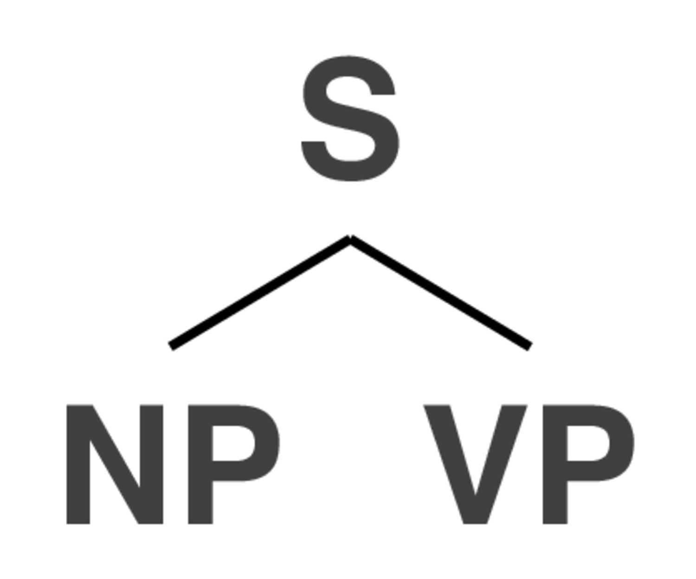 --- ### Phrase structure rules are like building blocks of sentences - We build sentences by building chunks using PS rules - Then combining them into the desired larger forms - <img class="r-stretch" src="img/tangrams.jpg"> --- # How do we build trees? --- ## Building a phrase structure tree - Step 1: Find constituents and think about what *kinds* of phrases they are - "Huh, this is a preposition. There's gotta be a PP around here..." - Step 2: Start stitching constituents together according to our PS rules - Step 3: Check to make sure every branching obeys the phrase structure rules - "OK, this is Rule 9, now rule 1 to 2, then here's 11..." - Step 4: A beautiful tree will grow! --- # A Small Phrase Structure Grammar for English --- ## Noun Phrase Rules --- ### Rule 1) NP -> DET N' ### Rule 3) N' -> N <img class="r-stretch" src="diagrams/tree_rule1.jpg"> <img class="r-stretch" src="diagrams/tree_rule3.jpg"> --- ### Rule 1) NP -> DET N' ### Rule 3) N' -> N <img class="r-stretch" src="diagrams/tree_rule1_3.jpg"> --- ... but what if there's no determiner? --- ### Rule 2) NP -> N' ### Rule 3) N' -> N 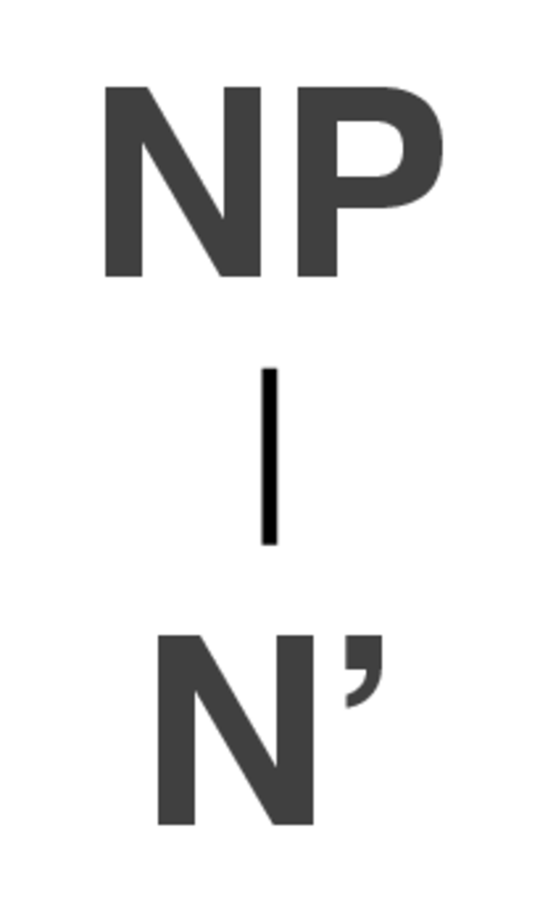 <img class="r-stretch" src="diagrams/tree_rule3.jpg"> --- ### Rule 2) NP -> N' ### Rule 3) N' -> N <img class="r-stretch" src="diagrams/tree_rule2_3.jpg"> 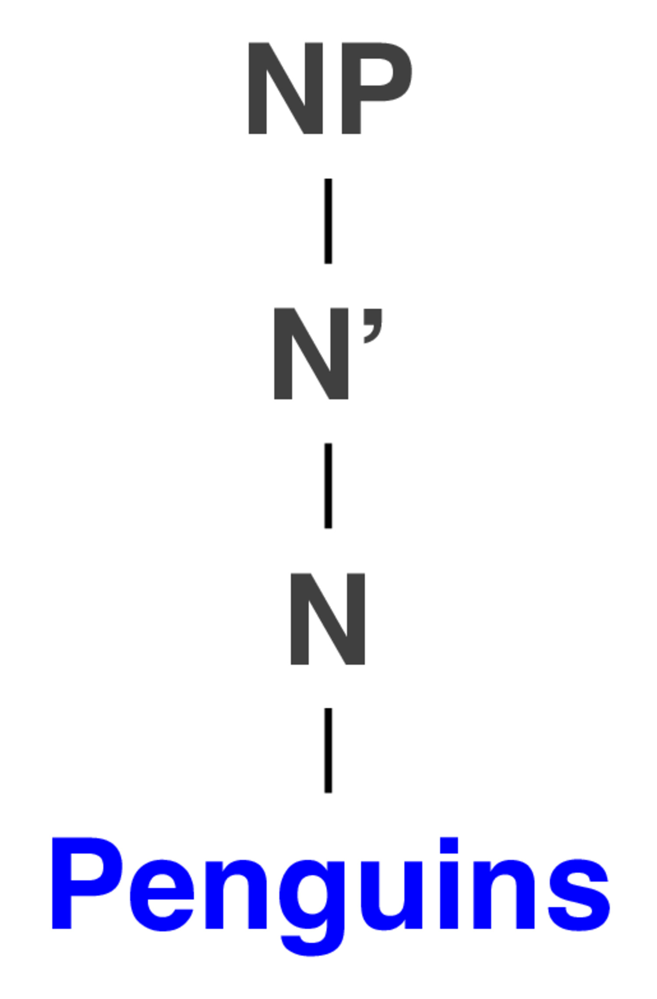 --- ### How do we deal with adjectives? --- ### Rule 4) N' -> ADJ N' - We can combine Rule 1, Rule 4, and Rule 3... <img class="r-stretch" src="diagrams/tree_rule1.jpg"> <img class="r-stretch" src="diagrams/tree_rule3.jpg"> <img class="r-stretch" src="diagrams/tree_rule4.jpg"> --- ### Rules 1, 3, 4 We can combine Rule 1, Rule 4, and Rule 3... <img class="r-stretch" src="diagrams/tree_rule1_3_4.jpg"> --- ### Rules 1, 3, 4 We can combine Rule 1, Rule 4, and Rule 3... 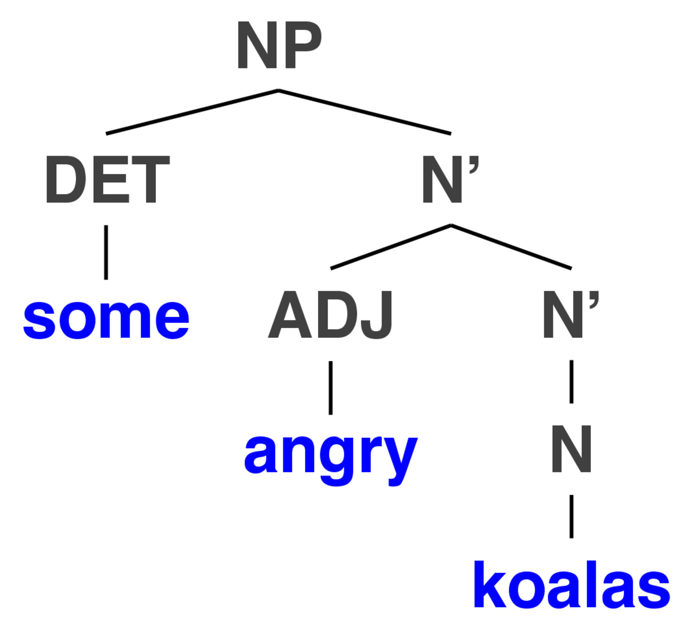 --- ### ... Rule 4 is recursive! - The N' contains another N'! - It can apply as many times as you need! --- --- <img class="r-stretch" src="diagrams/tree_rule1_3_4.jpg"> --- <img class="r-stretch" src="diagrams/tree_rule4recursive.jpg"> --- 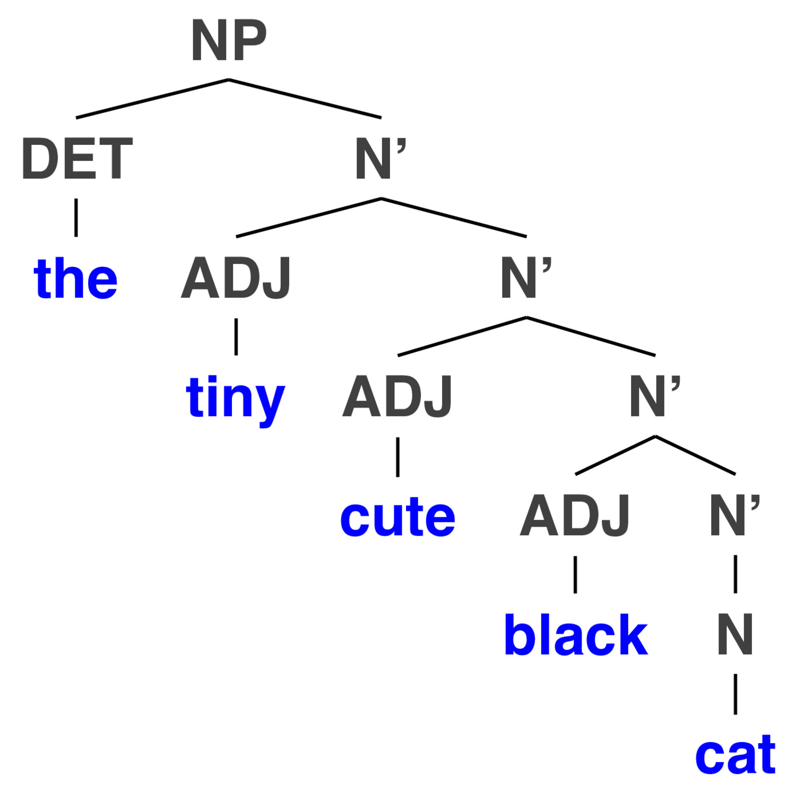 --- <img class="r-stretch" src="diagrams/tree_rule4recursive3.jpg"> --- 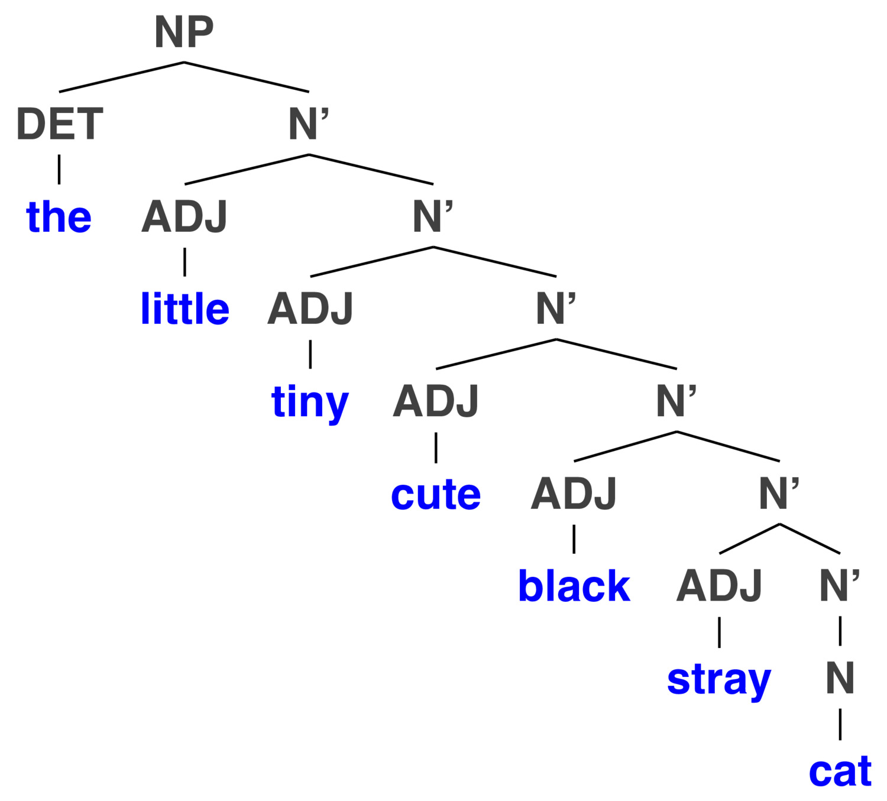 --- (... and so on) --- ## What about prepositions? Linguists love prepositions! --- ## Rule 5: NP -> NP PP ## Rule 6: PP -> P NP <img class="r-stretch" src="diagrams/tree_rule6.jpg"> <img class="r-stretch" src="diagrams/tree_rule8.jpg"> --- ### Rules 5 and 6 <img class="r-stretch" src="diagrams/tree_rule6_8.jpg"> --- ### "Two computational linguists from San Diego" <img class="r-stretch" src="diagrams/tree_compling.jpg"> --- ## Now, let's make a sentence! --- ### Rule 7: S -> NP VP ### Rule 8: VP -> V <img class="r-stretch" src="diagrams/tree_rule9.jpg"> <img class="r-stretch" src="diagrams/tree_rule10.jpg"> --- ### A very simple sentence <img class="r-stretch" src="diagrams/tree_rule2_3_9_10.jpg"> --- ### Adding in a preposition (with Rule 10) <img class="r-stretch" src="diagrams/tree_rule2_3_9_11_4_expanded_more_small.jpg"> --- ### But lots of verbs are *transitive*, and take a noun phrase as the object (Rule 9) 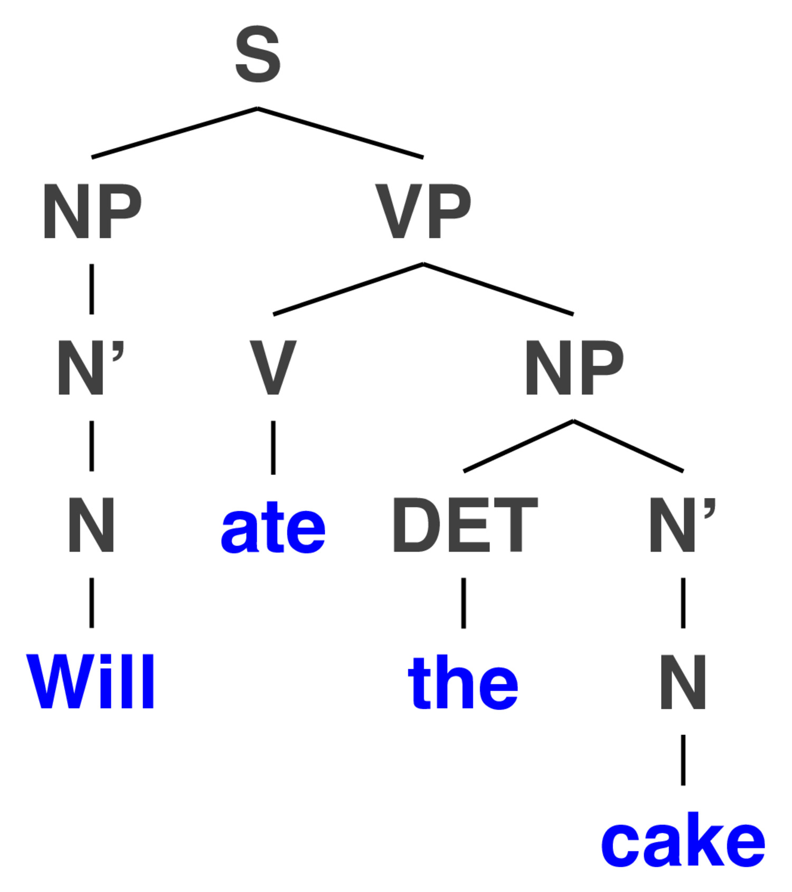 --- ### ... and we can bring old rules back in! <img class="r-stretch" src="diagrams/tree_rule2_3_9_11_4.jpg"> --- ### ... and we can bring more old rules back in! <img class="r-stretch" src="diagrams/tree_rule2_3_9_11_4_expanded.jpg"> --- ### ... and we can add on another PP <img class="r-stretch" src="diagrams/tree_rule2_3_9_11_4_expanded_more.jpg"> --- ### Is this starting to feel familiar? <img class="r-stretch" src="img/legos.jpg"> --- ### Making Syntax Trees is combining small elements to make bigger, fancier trees <img class="r-stretch" src="diagrams/tree_dogs_long.jpg"> --- <img class="r-stretch" src="humorimg/deeper.jpg"> --- ### Complementizers put sentences within sentences - Words like "that", "when", "if", "while", "as", and more --- <img class="r-stretch" src="diagrams/tree_complementizer1.jpg"> --- ### ... we can go deeper <img class="r-stretch" src="diagrams/tree_complementizer2.jpg"> --- ### ... and this combines with everything we've been doing ... <img class="r-stretch" src="diagrams/tree_complementizercake.jpg"> --- ### ... and just keeps getting worse ... 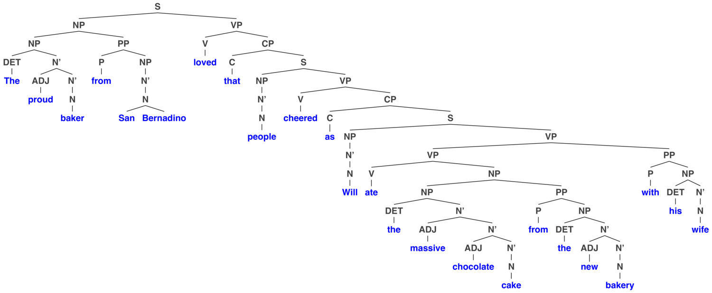 --- ## So that's how trees are grown --- ### In NLP, trees are usually stored with nested parentheses (S (NP (NP (DET The) (N' (ADJ proud) (N' (N baker)))) (PP (P from) (NP (N' (N San Bernadino))))) (VP (V loved) (CP (C that) (S (NP (N' (N people))) (VP (V cheered) (CP (C as) (S (NP (N' (N Will))) (VP (VP (V ate) (NP (NP (DET the) (N' (ADJ massive) (N' (ADJ chocolate) (N' (N cake))))) (PP (P from)(NP (DET the) (N' (ADJ new) (N' (N bakery)))))))(PP (P with) (NP (DET his) (N' (N wife)))))))))))) --- ### We can use these trees to understand the structure of sentences! - Things that can be 'broken off the tree' cleanly are constituents - The constituency structure helps us understand the sentence better - ... because sometimes, it's ambiguous! --- # Structural Ambiguity --- ### Different structures can imply different meanings - The same written sentence can be treed in many different ways --- ### I [saw the man] [with the telescope] <img class="r-stretch" src="diagrams/tree_manwithtelescope1.jpg"> --- ### I saw [the man with the telescope] <img class="r-stretch" src="diagrams/tree_manwithtelescope2.jpg"> --- ### John slapped his friend with the smelly fish <img class="r-stretch" src="diagrams/tree_slappedwithfish1.jpg"> --- ### John slapped his friend with the smelly fish 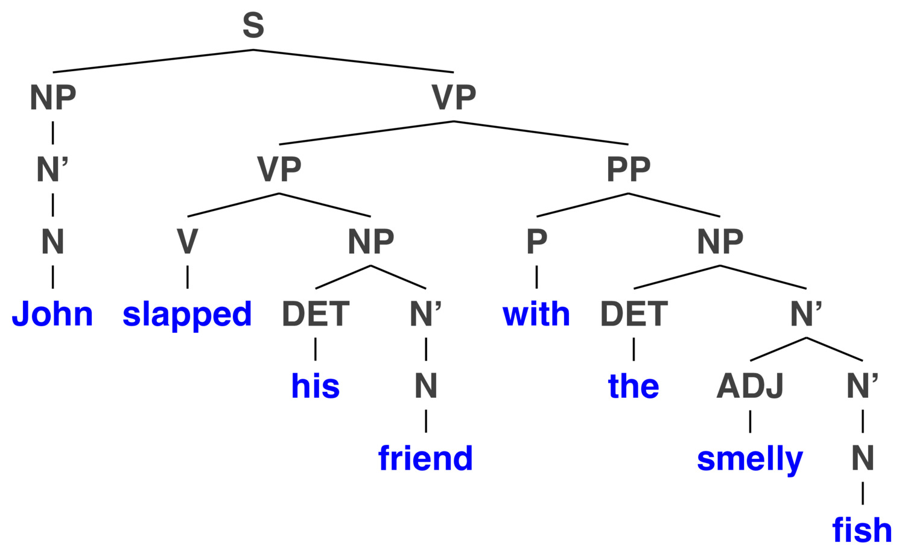 --- ### We as humans understand what structures are *plausible* --- <img class="r-stretch" src="diagrams/tree_dogs_long.jpg"> - This reads as expected --- 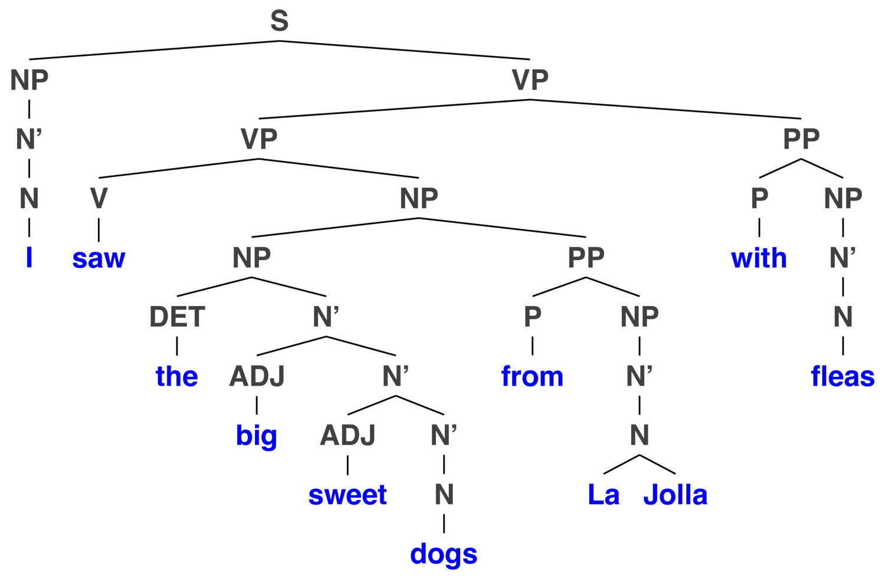 - "I used a flea-based telescope" --- 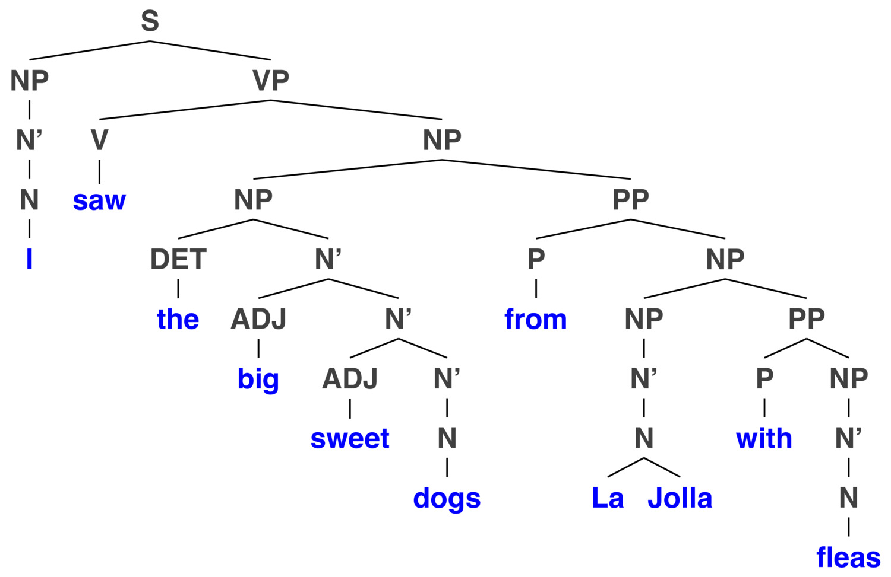 - "I'm from La Jolla with Fleas, not La Jolla" --- 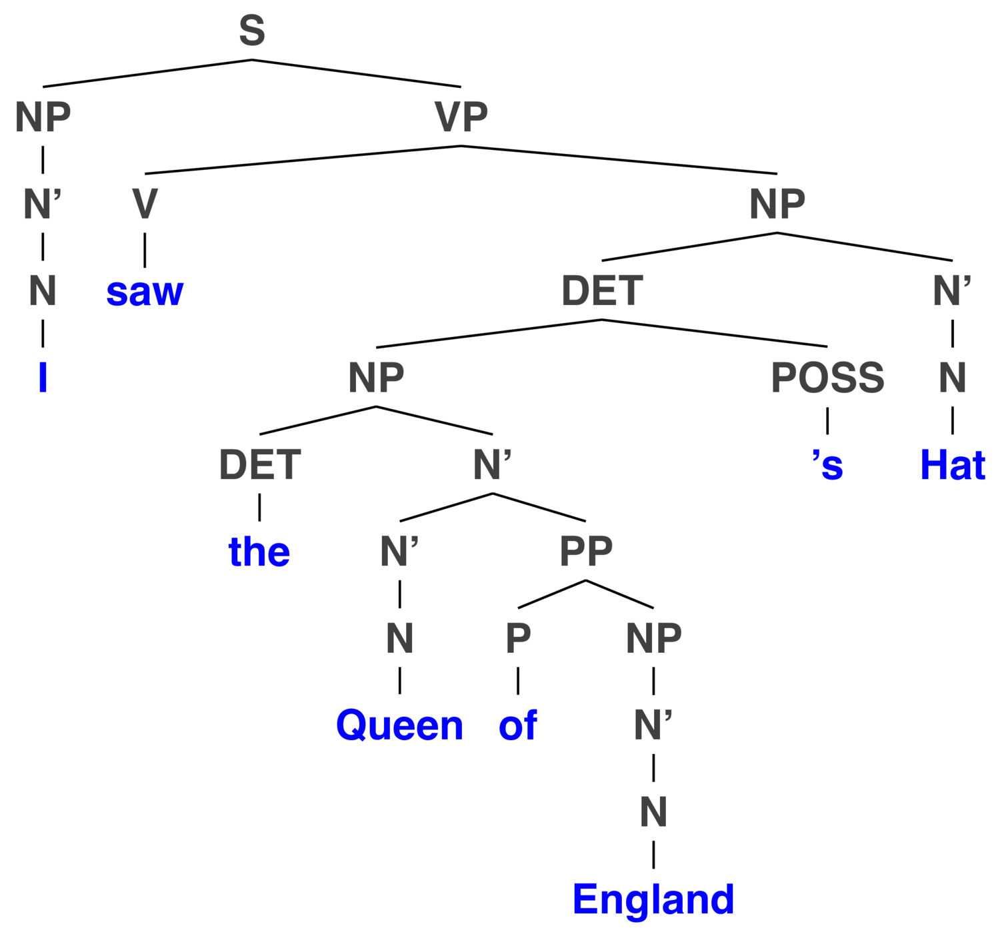 - "I saw the hat of the Queen of England" --- <img class="r-stretch" src="diagrams/tree_queenenglandshat2.jpg"> - "I saw the woman who is Queen of England's hat" --- ### We need to account for this in NLP! - Because the 'correct' parse isn't always obvious! - And we're not even always sure what the correct parts of speech are! --- ### You may think... 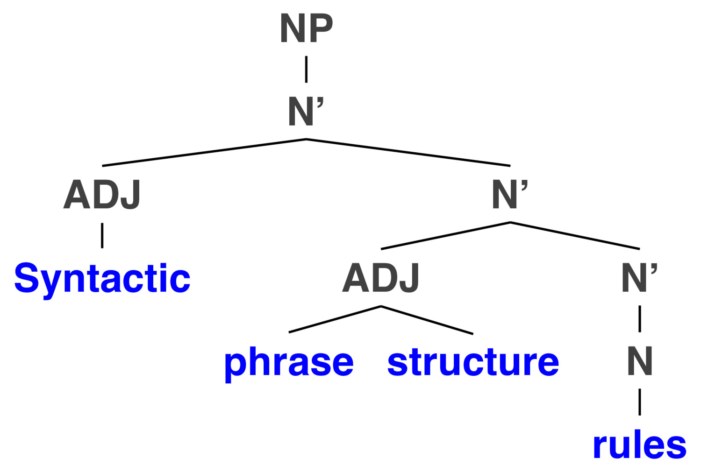 --- ### ... but in reality ... <img class="r-stretch" src="diagrams/tree_phrasestructurerules_alt.jpg"> --- ### Correct parts of speech are crucial - ... and errors there tend to lead to errors in parsing! - So let's figure out how to get that right first! --- ### For Next Time - We'll talk about automatic POS tagging --- <huge>Thank you!</huge>